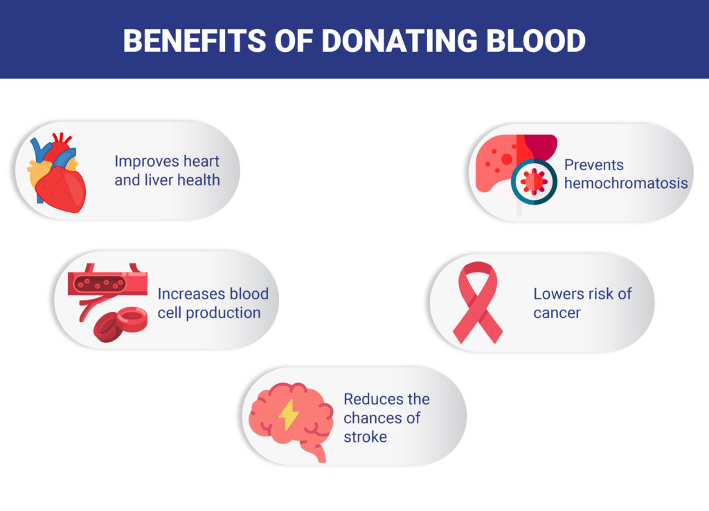

WHY TO DONATE BLOOD ?
Join our community of donors and save lives by donating blood.

Donating blood is healthy as it allows your body to renew the blood within a few weeks. It also helps clearing the iron deposits in the body, which reduces the risk of heart ailments. It also helps you to improve your quality of life.
Find Blood
Looking for blood? Find available donors near you and get the help you need.

Our platform connects you with potential blood donors in your area. Simply enter your details, and we'll match you with donors who have the blood type you need.
Blood Donation Camps
Participate in upcoming blood donation camps in your area.

We organize blood donation camps across various locations. Check out our upcoming events and participate in a camp near you. Your participation can save lives!